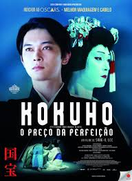
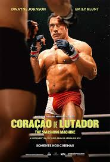
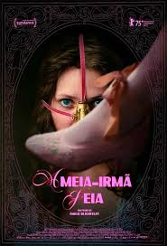

98th Annual Academy Awards
Melhor Cabelo e Maquiagem
Conheça os candidatos à Premiação do Oscar 2026 por Melhor Cabelo e Maquiagem.

Vencedor
Frankenstein
Descrição do Trabalho: O foco principal é a transformação de Jacob Elordi. Fugindo do visual "parafusos no pescoço", a maquiagem foca em texturas de pele realista, cicatrizes cirúrgicas profundas e uma palidez que sugere a ausência de circulação sanguínea.
Pontos Fortes: O uso de próteses translúcidas que permitem que as expressões do ator sejam visíveis sob a "máscara". O contraste entre o visual refinado de Oscar Isaac e a degradação física da Criatura é o ponto alto.

Kokuho - O Preço Da Perfeição
Descrição do Trabalho: O filme foca na arte do Kabuki. O trabalho de cabelo (perucas tradicionais pesadas e esculpidas) e a aplicação da maquiagem kumadori (as icônicas linhas vermelhas e pretas sobre fundo branco) são tratados com rigor histórico.
Pontos Fortes: A habilidade de manter a maquiagem impecável sob as luzes fortes do palco e a transição do elenco entre suas vidas civis e suas personas artísticas altamente estilizadas.

Pecadores (Sinners)
Descrição do Trabalho: Além da maquiagem de época dos anos 30, o filme apresenta transformações físicas aterrorizantes ligadas ao mal que assombra a cidade.
Pontos Fortes: O design de criaturas e o uso de efeitos de "sangue e feridas" que parecem orgânicos e assustadores. A maquiagem serve para diferenciar as castas sociais e o nível de "corrupção" física dos personagens afetados pela maldição.

Coração de Lutador: The Smashing Machine
Descrição do Trabalho: A transformação de Dwayne Johnson é o grande chamariz. Próteses faciais sutis foram usadas para aproximar as feições do ator às do lutador real, além de uma aplicação extensiva de cicatrizes de combate e inchaços faciais típicos de lutadores.
Pontos Fortes: O realismo das marcas de suor, sangue e o desgaste físico extremo. A maquiagem ajuda a contar a história do declínio físico e da luta de Kerr contra o vício, mostrando o envelhecimento precoce causado pelo esporte.

A Meia-Irmã Feia (The Ugly Stepsister)
Descrição do Trabalho: Aqui, a maquiagem e o cabelo são usados para criar o conceito de "beleza alternativa" ou "excentricidade". Em vez de próteses grotescas, o filme aposta em penteados arquitetônicos, perucas imensas e maquiagens de época carregadas que beiram o satírico.
Pontos Fortes: A criatividade no design de cabelo. O filme usa o visual para criticar os padrões de beleza da nobreza, transformando as "imperfeições" em declarações de moda ousadas e complexas.